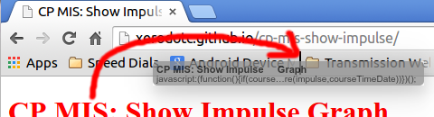
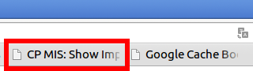

ลาก link ด้านบนไปไว้ที่ Bookmarks Bar เพื่อที่จะใช้งานในภายหลัง

เมื่อต้องการให้แสดง Impulse Graph ให้กด "CP MIS: Show Impulse Graph" (Bookmark ที่เพิ่งบันทึกไว้)

Source code: https://gist.github.com/xerodotc/77f62ebcecd6fd364402